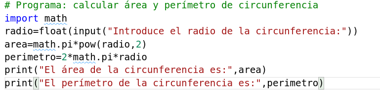

Mi primer programa en Python3
Podemos ejecutar código python de varia maneras:
Uso del interprete
Al instalar python3 el ejecutable del interprete lo podemos encontrar en /usr/bin/python3. Este directorio por defecto está en el PATH, por lo tanto lo podemos ejecutar directamente en el terminal, para ello ejecutamos:
$ python3
Python 3.5.3 (default, Jan 19 2017, 14:11:04)
[GCC 6.3.0 20170118] on linux
Type "help", "copyright", "credits" or "license" for more information.
>>>
Usando el interprete de comandos podemos escribir instrucciones que iremos ejecutando una a una.
Ejercicios
- Abre el interprete de python3 y ejecuta la instrucción
print("Hola Mundo!!!").
A partir de un fichero con el código fuente
Si tenemos nuestro programa en un fichero fuente (suele tener extensión py), por ejemplo programa.py,lo ejecutaríamos de la siguiente manera.
$ python3 programa.py
Para escribir un fichero con el código fuente de nuestro programa tenemos varias opciones:
- Podemos usar un IDE (entorno de desarrollo integrado), que además de la posibilidad de editar el código, nos ofrezca otras herramientas: depuración de código, generación automático de código, ayuda integrada, manejo del proyecto, gestión de los sistemas de control de versiones,..). Existen muchos IDE a nuestra disposición: Entornos de desarrollo para python.
- En este curso vamos usar un editor de texto: Nos permiten escribir nuestro código fuente de manera eficiente, además los nuevos editores de texto permiten añadir funcionalidades a través de plugin, algunos ejemplos: Sublime Text, Atom, Visual Studio Code, vim, emacs,… aunque hay muchos más: Editores de texto para python.
Ejercicios
- Elige un editor de texto (si no tienes criterio para elegir uno, pregunta a los compañeros o al profesor). Instalalo para escribir nuestro primer programa python.
Escribimos nuestro primer programa
Vamos a escribir nuestro primer programa para estudiar la estructura de un programa en python3.
Calcular el área y el perímetro de una circunferencia a partir del radio.
A partir del análisis y diseño del problema, podemos realizar un programa en python3 que sería similar a este:

Estructura del programa
- Un programa python está formado por instrucciones que acaban en un carácter de “salto de línea”.
- Una línea empieza en la primera posición, si tenemos instrucciones dentro de un bloque de una estructura de control de flujo habrá que hacer una identación.
- La identación se puede hacer con espacios y tabulaciones pero ambos tipos no se pueden mezclar. Se recomienda usar 4 espacios.
- La barra invertida “\” al final de línea se emplea para dividir una línea muy larga en dos o más líneas.
- Se utiliza el carácter # para indicar los comentarios.
Ejercicios
- Copia el programa en el editor de texto que has elegido.
- Guarda el fichero con el nombre
circunferencia.py. - Ejecuta desde la línea de comando el rpograma.
- Si tienes algún error al ejecutar, corrige los errores y vuelve a ejecutar.